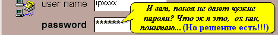

Это официальная страница программы HookDump.
В настоящий момент доступна версия 2.8

Программа Hook Dump 2.8
Предназначена для записи всего что набрано на клавиатуре
в программах запущенных из под Windows 3.1 .. Windows 95 в файл.
Для слежения за друзьями, врагами, конкурентами, коллегами и т.д.
Позволяет разобраться, какие программы загружали, что в них набирали,
какие кнопки мышью нажимали....
Переделано из ранее мной разработанного русификатора виндов - HookRus;
Принцип действия: Программы встраивается в систему делаясь абсолютно незаметной для пользователя,
создает файл в который скрупулезно записывает все действия пользователя, т.е. все что он набрал на клавиатуре и нажал мышью,
при этом фиксируя в какой программе, окне и поле он это делал.
Файл создается автоматически в указанной директории
с уникальным или указанным именем.
Директория где будет создан файл с информацией,
указывается в файле HookDump.ini в разделе [StartUp]
строка Dir=x:\xxx\
Если строка "Dir" отсутствует то используется Temp-директория.
Необязательная строка "File" указывает имя файла, если этой строки нет
то создается файл с уникальным именем и расширением ".hk"
Запись в файл происходит немедленно или буферизируется,
нормальное состояние файла - закрыт.
Версия 2.6 теперь не показывает окно предупреждения
при повторном запуске HookDump в скрытом режиме,
когда первый уже имеется в системе в
скрытом режиме. Теперь для того чтобы убрать HookDump из системы
нужно запустить его принудительно в видимом режиме,
стартовав его с параметром /V, (видимый режим) и выйдите
из него. Таким образом глюк возникавший в v2.5 при входе в систему
под другим именем в v2.6 удален.